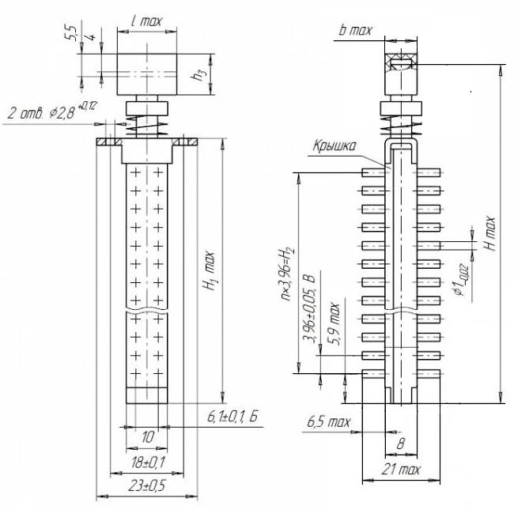
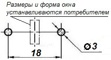

Переключатель П2К
П2К переключатель модульный предназначен для коммутации электрических цепей постоянного и переменного (частотой до 20 МГц) токов, для объемного и печатного монтажа.
{kind=link}
Таблица 1
| Параметр | Значение |
|---|---|
| Ток постоянный | от 1 мА до 1 А |
| Ток переменный | от 1 мА до 1,5 А |
| Напряжение | от 0,1 В до 250 В |
| Сопротивление контакта | не более 0,025 Ом |
| Сопротивление изоляции | не менее 1000 МОм |
| Емкость между соседними выводами | 1,5 пФ |
Условные обозначения переключателей П2К
Переключатель П2К(П2Кл)-Н(З,С,С1,С2)-1(2,3,4,5,7,9,10,11)-10(15,20,(Кр))-2(4,6,8)-б(ч,к)-1(2),
где:
- П2К, П2Кл - тип переключателя:
- П2К - переключатель кнопочный;
- П2Кл - переключатель клавишный.
- Н, З, С, С1, С2 - способ фиксации:
- Н - независимая фиксация;
- З - зависимая фиксация;
- С - стартовая фиксация (без фиксации);
- С1 - стартовая фиксация для одномодульных переключателей с передним корпусом;
- С2 - стартовая фиксация для одномодульных переключателей без переднего корпуса.
- 1, 2, 3, 4, 5, 7, 9, 10, 11 - число модулей.
- 10, 15, 20, (Кр) - шаг между осями модулей или размер прямоугольной кнопки для одномодульных переключателей:
- (Кр) - наличие круглой кнопки.
- 2, 4, 6, 8 - наличие групп коммутации в модуле.
- б, ч, к - цвет кнопок:
- б - белый;
- ч - черный;
- к - красный.
При наличии кнопок разных цветов после обозначения цвета в скобках указывается номер модуля с кнопкой данного цвета.
- 1, 2 - вариант исполнения с односторонним расположением выводов:
- 1 - со стороны корпуса;
- 2 - со стороны крышки.
ЕЩ0.360.037 ТУ - обозначение технических условий.
УХЛ2.1 по ГОСТ 15150-69 - вид климатического исполнения.
Пример:
П2К-Н-5-10-2-ч-2 - переключатель кнопочный типа П2К (П2К), независимая фиксация (Н), количество модулей (5), шаг между осями модулей (10), количество групп коммутации в модуле (2), черные кнопки (ч), количество выводов со стороны крышки (2).


Рис. 2 - Габаритные и установочные размеры переключателей П2К